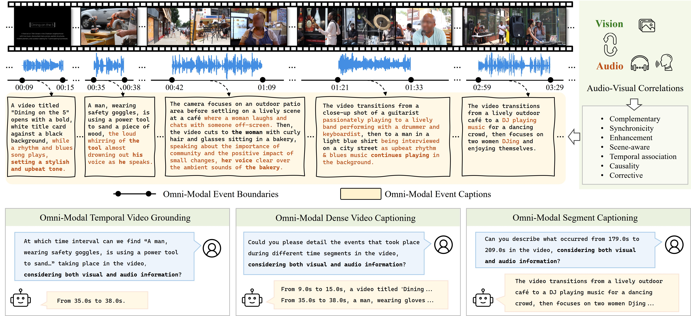
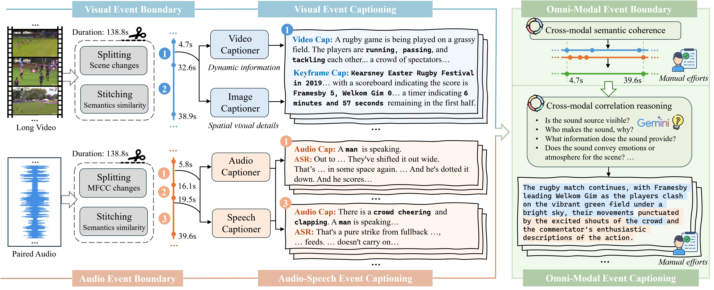
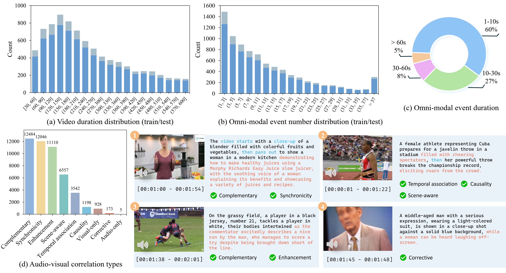
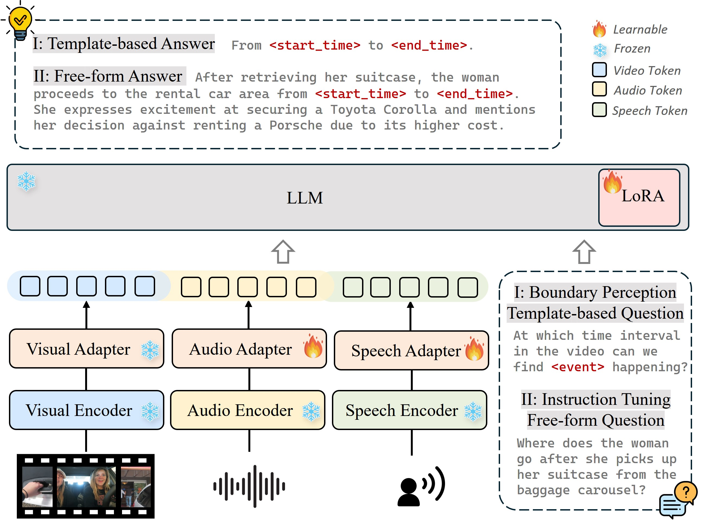
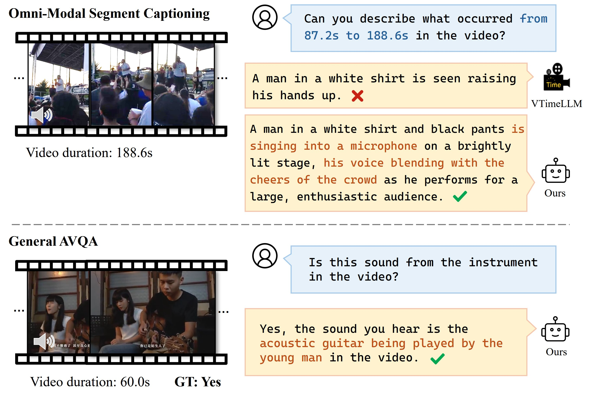

논문 한눈에 보기
LongVALE (CVPR 2025)는 비디오 이해 연구의 맹점을 정면으로 겨냥한다. 기존 연구는 "시각 전용(visual-only)" 혹은 "짧은 클립" 수준에 머물렀다. 하지만 실제 세계의 비디오는 시각·오디오·음성이 뒤섞인 채 수 분에 걸쳐 흘러간다. 이 논문은 그 갭을 메우기 위해 자동 파이프라인 → 벤치마크 → 모델로 이어지는 완결된 연구를 제시한다.

Abstract
흐름: 기존 한계 지적 → 데이터 부재 문제 → 파이프라인 제안 → 벤치마크 소개 → 모델 제안 → 실험 결과 예고
기존 한계 지적
비디오 이해 연구가 발전했지만, 여전히 거친 해상도(coarse-grained)나 시각 전용 태스크에 갇혀 있다. 실제 비디오는 시각·오디오·음성이 복합된 일련의 사건들로 이루어져 있다.
"Despite impressive advancements in video understanding, most efforts remain limited to coarse-grained or visual-only video tasks. However, real-world videos encompass omni-modal information (vision, audio, and speech) with a series of events forming a cohesive storyline."
데이터 부재 문제
옴니모달 + 세밀한 이벤트 어노테이션이 달린 데이터가 없고, 수동 레이블링 비용이 너무 높다.
"The lack of multi-modal video data with fine-grained event annotations and the high cost of manual labeling are major obstacles to comprehensive omni-modality video perception."
파이프라인 제안
이를 해결하기 위해 고품질 필터링 → 이벤트 경계 검출 → 교차 모달 캡셔닝으로 이어지는 자동화 파이프라인을 제안한다.
"To address this gap, we propose an automatic pipeline consisting of high-quality multi-modal video filtering, semantically coherent omni-modal event boundary detection, and cross-modal correlation-aware event captioning."
벤치마크 소개
그 결과물이 LongVALE다 — 8.4K 롱 비디오 안에 105K 옴니모달 이벤트, 정밀한 시간 경계와 관계 인식 캡션.
"In this way, we present LongVALE, the first-ever Vision-Audio-Language Event understanding benchmark comprising 105K omni-modal events with precise temporal boundaries and detailed relation-aware captions within 8.4K high-quality long videos."
모델 + 결과 예고
LongVALE로 학습한 LongVALE-LLM은 옴니모달 세밀 시간 이해를 최초로 달성했으며, AVQA 제로샷에서도 압도적 성능을 보였다.
"Further, we build a baseline that leverages LongVALE to enable video large language models (LLMs) for omni-modality fine-grained temporal video understanding for the first time."
Introduction
흐름: 비디오 이해의 중요성 → 이상적 에이전트의 조건 → 기존 연구의 두 가지 한계 → 데이터 공백의 구체적 분석 → 파이프라인 세 축 설명 → LongVALE 수치 제시 → LongVALE-LLM 제시 → 기여 요약
비디오 이해의 중요성 + 이상적 에이전트
소셜 미디어의 비디오 폭증 속에서, 이상적인 지능 에이전트는 교차 모달 추론과 세밀한 시간 이해를 동시에 갖춰야 한다.
"An ideal intelligent video agent should imitate it, capable of both cross-modal reasoning and fine-grained temporal understanding."
기존 연구의 두 가지 한계
현재 연구는 (1) 짧은 클립의 거친 태스크(검색/캡셔닝), (2) 시각 전용 세밀 태스크(temporal grounding) 중 하나에 치우쳐, 두 능력을 동시에 갖추지 못하고 있다.
"However, current research is limited to coarse-grained tasks (e.g., video retrieval/captioning) or visual-only fine-grained tasks (e.g., temporal grounding/dense captioning), remaining far from enough to achieve both the capabilities."
| Dataset | Ann. | #Videos | Avg.Len | #Events | V | A | S | Captions | Timestamps | A-V Corr. |
|---|---|---|---|---|---|---|---|---|---|---|
| InternVid | G | 234M | 11.7s | 1 | ✓ | ✗ | ✗ | V | — | ✗ |
| Panda-70M | G | 70.8M | 8.5s | 1 | ✓ | ✗ | ✗ | V | — | ✗ |
| AudioCaps | M | 51.3K | 10s | 1 | ✗ | ✓ | ✗ | A | — | ✗ |
| VALOR | M | 1.18M | 10s | 1 | ✓ | ✓ | ✗ | VA | — | ✗ |
| VAST | G | 27M | 5~30s | 1 | ✓ | ✓ | ✓ | VAS | — | ✗ |
| ActivityNet Caps | M | 20K | 180s | 3.7 | ✓ | ✗ | ✗ | V | V | ✗ |
| UnAV-100 | M | 10,790 | 42.1s | 2.8 | ✓ | ✓ | ✗ | — | VA | ✗ |
| LongVALE (Ours) | G+M | 8,411 | 235s | 12.6 | ✓ | ✓ | ✓ | VAS | VAS | ✓ |
데이터 공백 + 파이프라인 세 축
공백을 메우기 위해 세 가지 축으로 파이프라인을 설계했다: ① 고품질 필터링, ② 옴니모달 이벤트 경계 검출, ③ 오디오-비주얼 상관 추론 캡셔닝.
"Our pipeline includes three distinct aspects: 1) High-quality video filtering for rich audio-visual semantics and temporal dynamics. 2) Omni-modal event boundary detection for semantic coherence in both visual and audio scenes. 3) Omni-modal event captioning emphasizing audio-visual correlation reasoning."
기여 요약
① 자동 파이프라인, ② LongVALE 벤치마크, ③ LongVALE-LLM의 세 가지 기여.
"We introduce LongVALE, the first-ever benchmark providing omni-modal event temporal boundaries and cross-modal correlation-aware captions for 105K omni-modal events within 8.4K high-quality multi-modal long videos."
Related Work
흐름: 멀티모달 비디오 벤치마크 리뷰 → 세밀한 비디오 이해 리뷰 → LongVALE의 위치 정리
멀티모달 벤치마크의 한계
InternVid, VAST 등 대규모 데이터셋은 짧은 클립에 거친 캡션만 제공하고, 모달리티를 단순 연결(concatenation)할 뿐 교차 모달 추론이 없다. 세밀한 어노테이션이 있는 ActivityNet/Charades-STA는 시각 전용.
"These benchmarks offer only coarse-grained captions for short clips, which are unsuitable for fine-grained long video understanding... fine-grained video benchmarks like ActivityNet Caps and Charades-STA focus only on visual modality."
세밀한 비디오 이해 연구
Temporal grounding, dense captioning 등 세밀 태스크 연구들이 존재하지만 모두 시각 전용. 최근 Video LLM들도 마찬가지다.
"Recent video large language models (video LLMs) have shown promise in visual-only fine-grained video understanding. In contrast, we aim to pioneer omni-modality fine-grained video understanding for a more holistic video comprehension."
Section 3: The LongVALE Benchmark
흐름: 데이터 수집·필터링 → 옴니모달 이벤트 경계 검출(시각 / 오디오 / 합성) → 옴니모달 이벤트 캡셔닝(시각 / 오디오+음성 / 관계 인식) → 데이터 분할 + 수동 검수 → 통계 분석
데이터 수집 및 필터링
ACAV-100M에서 YouTube 원본 영상을 수집하고, 4단계 필터링(해상도·음성 비율·정적 장면·오디오-비주얼 일치도)으로 100K → 8.4K로 압축. 엄격한 품질 기준.
"We source videos from ACAV-100M... Then, we design a filtering strategy to obtain high-quality videos containing rich visual and audio semantics, as well as temporal dynamic information."
필터링 4단계:
- 해상도 360p 미만 제거, 영어 자막 보유 영상만 선택
- 음성이 95% 이상 차지하는 영상 제거 (다양한 소리 확보)
- PySceneDetect로 정적 슬라이드쇼 제거
- C-MCR 모델로 오디오-비주얼 유사도 측정 → 관련 없는 배경음악/더빙 제거
시각 이벤트 경계 검출
기존 Panda 2단계 방식(기본 장면 분할 → 유사 장면 병합)을 롱 비디오에 맞게 개선. 정적 장면·전환 클립 후처리로 제거.
"Using only visual cues, we apply a two-stage detection method which includes splitting basic visual scenes and then merging semantically similar ones."
오디오 이벤트 경계 검출 ← 핵심 기여
사전 정의된 카테고리 없이 일반 오디오 이벤트 경계를 검출하는 최초의 방법. MFCC로 스펙트럼 변화 감지 → CLAP으로 의미 유사도 계산 → 인접 클립 병합.
"Although audio is crucial for temporal video understanding, no method exists for detecting generic audio event boundaries without pre-defined categories. To fill this gap, we design a generic method that segments long audio sequences into semantically coherent clips leveraging distinct audio properties."
옴니모달 이벤트 경계 합성
시각 경계를 기준으로 하되, 그 안의 오디오 이벤트를 잘라내지 않고 끝까지 포함시켜 오디오 의미 무결성 보장.
"To define omni-modal event boundaries, we primarily rely on visual boundaries while preserving the integrity of audio events. Specifically, for each visual event, we set its start time as the beginning of the omni-modal event and include all overlapping audio events without truncation."

모달리티별 캡셔닝
시각(LLaVA-NeXT-Video + GPT-4o 키프레임), 오디오(Qwen-Audio), 음성(Whisper-Large)으로 각각 캡션 생성. 단순 연결이 아니라 다음 단계에서 Gemini로 통합.
"Specifically, we employ LLaVA-NeXT-Video to caption each video event... Qwen-Audio, a general large audio-language model, to obtain detailed audio descriptions... Whisper-Large, a strong automatic speech recognition (ASR) model."
관계 인식 옴니모달 캡셔닝
Gemini-1.5-Pro가 세 모달리티 캡션을 통합하면서 오디오-비주얼 상관관계(동기성, 보완, 인과성 등)를 명시적으로 추론. 이전 이벤트 캡션을 컨텍스트로 제공해 일관성 확보.
"Instead of simply concatenating modality-specific captions, we instruct Gemini-1.5-Pro to establish meaningful connections between them, such as analyzing whether audio events are visible, identifying sound sources, and reasoning about causality."
통계 분석
8,411개 비디오, 105,730개 이벤트, 평균 영상 길이 3.9분, 평균 이벤트 12.6개/영상, 오디오-비주얼 상관 7가지 유형 분류.
"It includes 8,411 long videos spanning over 549 hours, with an average video duration of 3.9 minutes. The dataset contains 105,730 omni-modal events, each annotated with accurate temporal boundaries and omni-modality relation-aware captions."

Section 4: LongVALE-LLM
흐름: 전체 아키텍처 설명 → 학습 레시피 (경계 인식 튜닝 → 명령어 튜닝)
전체 아키텍처
멀티모달 인코더(CLIP/BEATs/Whisper)로 각 모달리티 특징 추출 → 어댑터로 LLM 임베딩 공간 매핑 → 시퀀스 차원으로 연결 → Vicuna-7B가 자기회귀적으로 응답 생성.
"Given a long video, the multi-modal encoders first extract modality-specific token features, which are then mapped into the LLM's embedding space via the multi-modal adapters. The embeddings from different modalities are concatenated along the sequence dimension and combined with the task instruction to form the prefix input to the LLM."

2단계 학습
- 1단계 (경계 인식 튜닝): 옴니모달 이벤트와 시간 경계를 대화 형식으로 변환 (7,240개). 템플릿 기반 단일/다중 턴 QA.
- 2단계 (명령어 튜닝): Gemini로 자유 형식 대화 생성 (25,400개). 명령어 따르기 + 추론 능력 향상.
"Although our model demonstrates the ability to perceive omni-modal event boundaries after boundary perception tuning, its outputs tend to overfit to templated answers. To improve the model's ability to follow human instructions... we create high-quality instruction-tuning data based on our LongVALE."
Section 5: Experiments
흐름: 실험 설정 → 메인 결과 (3가지 옴니모달 태스크) → 제로샷 AVQA → 절제 연구 (학습 데이터 / AVC 효과 / 모달리티) → 정성적 결과
실험 설정
시각(CLIP ViT-L/14, 100프레임), 오디오(BEATs), 음성(Whisper-Large-v2), LLM(Vicuna-7B). 세 가지 평가 태스크: Omni-TVG(R@IoU, mIoU), Omni-DVC(SODA_c, CIDEr, METEOR), Omni-SC(BLEU-4, ROUGE-L, METEOR, CIDEr).
메인 결과 — 압도적 성능 차이
LongVALE-LLM이 기존 모든 Video LLM을 세 태스크에서 큰 차이로 앞선다. 오디오-비주얼 입력을 지원하는 VideoLLaMA/NExT-GPT도 프레임 수 제한(8프레임)으로 세밀 태스크에서 실패. 시간 이해 특화 VTimeLLM/TimeChat은 오디오 정보를 못 쓴다.
"Our LongVALE-LLM (7B) supports video, audio and speech input with fine-grained temporal understanding ability, and outperforms other video LLMs by a significant margin across all three tasks."
제로샷 AVQA — 데이터 효율성
OneLLM(460K 오디오 데이터), AVicuna(350K)보다 적은 32.7K 샘플만 써도 AVSD에서 SOTA 달성. LongVALE의 교차 모달 추론 캡션이 일반화 능력을 끌어올림.
"Despite using significantly less data, our model surprisingly achieves state-of-the-art performance on AVSD... using only total 32.7K audio-visual samples from our LongVALE dataset, accounting for less than 10% of the data they use."
절제 연구
세 가지 절제로 각 설계 결정을 검증.
- 학습 단계별 데이터 영향: 두 단계 모두에 LongVALE 데이터 추가 시 모든 태스크 큰 향상. 명령어 튜닝은 특히 세그먼트 캡셔닝 대폭 개선.
- AVC(오디오-비주얼 상관) 효과: 단순 연결 대비 AVC 추론 포함 캡션으로 학습 시 캡셔닝 태스크에서 현저한 향상.
- 모달리티 추가 효과: V → V+A → V+S → V+A+S 순서로 모든 태스크 성능이 일관되게 향상.
정성적 결과
VTimeLLM은 시각만 보고 "손을 드는 행동"으로 오인. LongVALE-LLM은 오디오(남성 노래, 군중 환호)를 통합해 정확히 묘사.

Conclusion
흐름: 기여 재요약 → 모델 능력 강조 → 향후 방향
기여 + 의의
LongVALE는 교차 모달 추론과 세밀한 시간 이해라는 두 가지 능력을 동시에 갖춘 첫 번째 시도. 지능형 비디오 어시스턴트로 가는 중요한 발걸음.
"Our model exhibits distinct capabilities of both cross-modal reasoning and fine-grained temporal understanding that are absent in existing video LLMs, making a crucial step toward an intelligent video assistant."
향후 방향
더 많은 고품질 데이터로 LongVALE 확장 + 비디오 의미 밀도와 교차 모달 상호작용 개선을 위한 아키텍처 고도화.
"In the future, we will expand our LongVALE with more high-quality data and advance the model's architecture to improve video semantic density and cross-modal interaction."